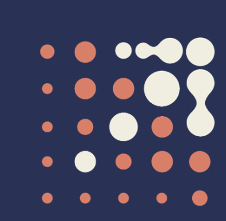

x<!doctype html>
<html lang="en">
	<head>
		<meta charset="utf-8">
		<meta name="viewport" content="width=device-width, initial-scale=1.0, maximum-scale=1.0, user-scalable=no">

		<title>GitHub Copilot Presentation</title>

		<link rel="stylesheet" href="dist/reset.css">
		<link rel="stylesheet" href="dist/reveal.css">
		<link rel="stylesheet" href="dist/theme/iarc.css">

		<!-- Theme used for syntax highlighted code -->
		<link rel="stylesheet" href="plugin/highlight/monokai.css">
		
		<style>
			.iarc-logo {
				position: fixed;
				bottom: 30px;
				left: 30px;
				z-index: 10;
			}
			
			.balls-decoration {
				position: fixed;
				bottom: 30px;
				right: 30px;
				z-index: 10;
				opacity: 0;
				transition: opacity 0.3s;
			}
			
			body.transition-complete:not(.show-right-bg) .balls-decoration {
				opacity: 1;
			}
			
			/* Circle decoration for titles */
			.reveal .slides section h1::before,
			.reveal .slides section h2::before {
				content: '';
				display: inline-block;
				width: 36px;
				height: 36px;
				background-color: #f19c82;
				border-radius: 50%;
				margin-right: 15px;
				vertical-align: middle;
			}
			
			/* Alternating background images for slides */
			body::before {
				content: '';
				position: fixed;
				right: 0;
				top: 0;
				width: 550px;
				height: 100vh;
				background-image: url('images/right-bg.png');
				background-position: right center;
				background-repeat: no-repeat;
				background-size: cover;
				pointer-events: none;
				z-index: 0;
				opacity: 0;
				transition: opacity 0.3s;
			}
			
			body.show-right-bg::before {
				opacity: 1;
			}
		</style>
	</head>
	<body>
		<div class="reveal">
			<!-- IARC Logo -->
			
			<!-- Balls decoration for even slides -->
			
			
			<div class="slides">
				<!-- Markdown content -->
				<section data-markdown>
					<textarea data-template>
						# GitHub Copilot
						### AI-Powered Code Assistant
						
						

						<p align="center" style=" width: 100%; display: block; text-align: center;"><a href="https://github.com/features/copilot">https://github.com/features/copilot</a></p>

						---
						
						## What is GitHub Copilot?
						
						- AI pair programmer
						- Powered by OpenAI
						- Suggests code in real-time
						- Works in your IDE (Visual Studio Code)
								
						---
						
						## How It Works
						
						- Write a comment describing what you want
						- Copilot suggests code
						- Accept, reject, or modify suggestions
						- 3 modes : ask, edit, agent
					</textarea>
				</section>
				
				<!-- Benefits Section -->
				<section data-markdown>
					<textarea data-template>
						## Benefits
						
						- **Increased Productivity** - Write code faster
						- **Learn as You Go** - See different approaches
						- **Discover APIs** - Find the right functions
					</textarea>
				</section>
				
				<!-- Use Cases Section with Vertical Sub-slides -->
				<section>
					<!-- Main Use Cases Slide -->
					<section data-markdown>
						<textarea data-template>
							## Use Cases
							- Website Translation
						</textarea>
					</section>
					
					<!-- Sub-slide 1: Website Translation -->
					<section data-markdown>
						<textarea data-template>
							
						</textarea>
					</section>

					<!-- Main Use Cases Slide -->
					<section data-markdown>
						<textarea data-template>
							## Use Cases
							- Website Translation
							- Platform Revamp
						</textarea>
					</section>
					
					<!-- Sub-slide 2: Data Visualization -->
					<section data-markdown>
						<textarea data-template>
							
						</textarea>
					</section>

					<!-- Main Use Cases Slide -->
					<section data-markdown>
						<textarea data-template>
							## Use Cases
							- Website Translation
							- Platform Revamp
							- Data Visualization Library
						</textarea>
					</section>
					
					<!-- Sub-slide 3: Platform Revamp -->
					<section data-markdown>
						<textarea data-template>
							
						</textarea>
					</section>
					<!-- Main Use Cases Slide -->	
					<section data-markdown>
						<textarea data-template>
							## Use Cases
							- Website Translation
							- Data Visualization Library
							- Platform Revamp
							- Code Refactoring
							- Documentation
						</textarea>
					</section>
				</section>
				
				<!-- Continue with remaining sections -->
				<section data-markdown>
					<textarea data-template>
						## Limitations
						
						- May suggest incorrect code
						- Requires code review
						- Works best with common patterns
						- Privacy considerations
						- Not a substitute for understanding
						
						---
						
						## Pricing
						
						- **Individual**: $10/month or $100/year
						- **Business**: $19/user/month
						- **Free for students and open source maintainers**
						
						---
						
						## Resources
						
						- [copilot.github.com](https://copilot.github.com)
						- [VS Code Extension](https://marketplace.visualstudio.com/items?itemName=GitHub.copilot)
						- [Documentation](https://docs.github.com/en/copilot)
						- [Best Practices Guide](https://github.blog/tag/github-copilot/)
						
						---
						
						## Demo Time
						
						Let's see GitHub Copilot in action!
						
					</textarea>
				</section>
			</div>
		</div>

		<script src="dist/reveal.js"></script>
		<script src="plugin/notes/notes.js"></script>
		<script src="plugin/markdown/markdown.js"></script>
		<script src="plugin/highlight/highlight.js"></script>
		<script>
			// More info about initialization & config:
			// - https://revealjs.com/initialization/
			// - https://revealjs.com/config/
			Reveal.initialize({
				hash: true,

				// Learn about plugins: https://revealjs.com/plugins/
				plugins: [ RevealMarkdown, RevealHighlight, RevealNotes ]
			});
			
			// Toggle right-bg.png on even slides
			Reveal.on('slidechanged', event => {
				const slideNumber = event.indexh + 1;
				if (slideNumber % 2 === 0) {
					document.body.classList.add('show-right-bg');
				} else {
					document.body.classList.remove('show-right-bg');
				}
			});
			
			// Set initial state
			Reveal.on('ready', event => {
				const slideNumber = event.indexh + 1;
				if (slideNumber % 2 === 0) {
					document.body.classList.add('show-right-bg');
				}
			});
			
			// Show balls.png after slide transition ends (but not on vertical slides)
			Reveal.on('slidetransitionend', event => {
				const indices = Reveal.getIndices();
				// Hide balls on vertical slides (indexv > 0)
				if (indices.v === 0) {
					document.body.classList.add('transition-complete');
				} else {
					document.body.classList.remove('transition-complete');
				}
			});
			
			// Hide balls.png when transition starts
			Reveal.on('slidechanged', event => {
				document.body.classList.remove('transition-complete');
			});
		</script>
	</body>
</html>
